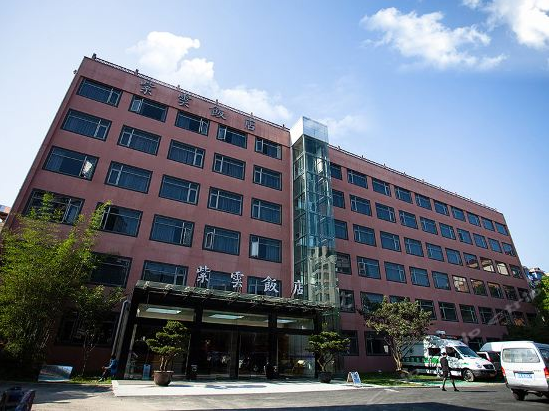
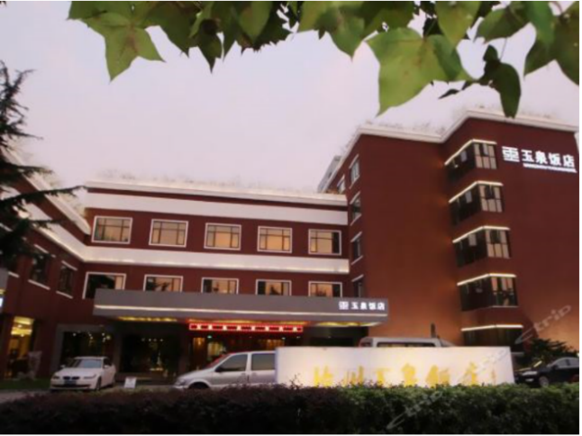

For more than 20 years, The Dragon has ranked among the finest hotels in Hangzhou - the first choice for visitors from China and around the world. With nearly 600 rooms, the city's largest ballrooms, renowned conference facilities and sumptuous dining, The Dragon has an unparalleled reputation for refined service.
Guests appreciate the hotel's ideal location in the heart of Hangzhou's central business district. Close to splendid shopping, and major corporate and government offices, The Dragon is also on the doorstep of some of China's most revered cultural landmarks. The hotel faces the stunning Baoshi Mountain and is a short walk from historic and picturesque West Lake.
The hotel is equipped with the world's first intelligent meeting management system, which automatically analyzes various types of data and aggregates effective information into reports, bringing an easy and efficient exhibition experience. The fitness center is equipped with state-of-the-art fitness equipment, professional fitness instructors and yoga instructors to help you stay in shape while you are away from home. With an elegant and calm atmosphere and high-end living, Huanglong Hotel is an ideal place to relax and inspire creativity.
The Dragon Hotel
| check-in date | room type | rooms available | pre-reservation prices(before and including Jan.15) | normal prices(Jan.16 to Jan.24) | service included |
|---|---|---|---|---|---|
Feb. 23 - Feb. 28 |
A superior double room or a superior double bed | TBA | RMB 798 | RMB 898 | each room price includes 1-2 breakfast buffet |
| Deluxe twin or deluxe king-size bed | TBA | RMB 998 | RMB 1098 | ||
| Elegant big bed room | TBA | RMB 1198 | RMB 1298 |
Ziyun(violet cloud) Restaurant was opened in 2016 with 154 rooms, located in hangzhou finance, commerce, tourism and cultural sports center - the center of huanglong business district on hangzhou road, adjacent to the west lake scenic spot.The main building of the hotel is six storeys high. There are more than 100 guest rooms and 4 conference rooms of various sizes. At the same time, the hotel is equipped with dining and banquet hall and conference facilities.

Ziyun Restaurant
Yuanquan Restaurant has double bed room with mountain view, deluxe single rooms and suites, 129 in total, and luxury room facilities. equipped with intelligent integrated operation system, The hotel also has two conference rooms of different sizes, the Chinese restaurant which can accommodate 300 people dining at the same time , business center, foot bath and other service facilities and project. Particularly within the hotel a mini golf course is set up, the free broadband Internet and the lobby WIFI access are available.

Yuquan Restaurant